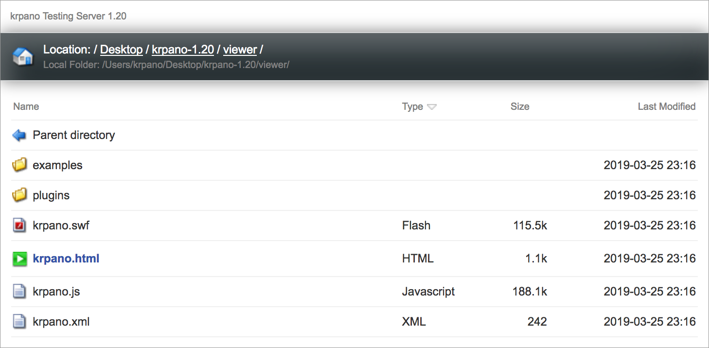

krpano Testing Server
The krpano Testing Server is a small and easy-to-use static-file localhost web-server.
No install or setup required.
It allows testing on the local system and the local network without any file-access-restrictions
from the browser and without the need for uploading the content.
Other computers and devices in the local network are be able to view the files just by entering
the IP-address in the browser.
Additionally the krpano Testing Server provides a cache-control to allow quick editing without
the need to clear the browser-cache on every change of a file.
There are two types of krpano Testing Server applications available:
- A GUI version: krpano Testing Server,
- and a Command-Line version: tour_testingserver.exe / tour_testingserver_macos
krpano Testing Server (GUI version)
krpano Testing Server (Command-Line version)
The Command-Line version provides the same functionality as the GUI version,
but is much smaller, without a direct branding and better suitable for deployment.
For customizing the behavior of the Command-Line version (e.g. to use a different root folder, setting the port, enabling HTTPS-support, quiet mode, ...) run it with -? or -help as parameter to see all available parameters and their settings.
For customizing the behavior of the Command-Line version (e.g. to use a different root folder, setting the port, enabling HTTPS-support, quiet mode, ...) run it with -? or -help as parameter to see all available parameters and their settings.
Directory Listing

The krpano Testing Server provides a CSS styled directory listing for easy browsing through the files and folders.
For customizing the directory listing provide a krpanotestingserver.css named file in the servers root folder.
Download
The krpano Testing Servers are included in the krpano download packages.
The GUI version is available as krpano Testing Server named application directly the root folder
and the Command-Line version is available in the html/templates/ folder as
tour_testingserver.exe file for Windows and as tour_testingserver_macos file for Mac OSX.
The krpano Testing Servers are standalone applications without any dependencies and can be also renamed to any other filenames, e.g. for providing them together with a tour to end-users.
The krpano Testing Servers are standalone applications without any dependencies and can be also renamed to any other filenames, e.g. for providing them together with a tour to end-users.
HTTPS Support
The latest browser developments are forcing the need for HTTPS for more and more features,
e.g. today already for gyroscope and VR-usage and in future supposedly also for fullscreen-support.
Providing HTTPS support for local IP-addresses is possible, but requires some manual steps for setup once.
One note - that setup is only thought for developers and content-creators and internal usage, for
not for casual end-user-usage.
Here a step-by-step tutorial:
- As first step consider using a fixed IP-address for the computer where the testing server is running. Because it will be necessary to generate a certificate for that IP-address and so when the IP-address changes a new certificate would need to be generated.
- A great and easy-to-use tool for generating and managing the required certificates is the mkcert tool. It can be either installed manually as shown here or otherwise pre-built binaries can be downloaded here.
-
After mkcert is installed, run once this command:
mkcert -install
This will install a 'certificate authority' certificate on your system for authenticating the certificate that will be later used in the browser. -
Then use this call to generate a certificate for your current IP-address, e.g. like this:
mkcert 192.168.0.100
After this call there will be e.g. 192.168.0.100.pem and 192.168.0.100-key.pem files in your current working directory. -
The next steps for iOS devices:
- Copy the 192.168.0.100.pem file into the root folder of your testing server (still running with HTTP).
- Open the testing-server URL in the iOS Safari browser and open the 192.168.0.100.pem file. The browser will ask you for loading the certificate, confirm that.
- After loading the certificate it needs to get manually installed, therefore go the iOS Settings app. There the new added certificate should be already listed. Select the certificate and then install it (confirm a several times).
-
Then open the Settings tab of the krpano Testing Server and select there
one of the both .pem files by the SSL Certificate Browse button.
The krpano Testing Server will automatically look for the other .pem file and load that too.
When using the Command-Line version call it with:
-cert=path-and-filename-of-one-of-the-two-pem-files
to load the certificate files and run the server as HTTPS server. -
Almost done, now open the testing-server URL in your browser, but now with https://
instead of http://.
Note - there is no http to https redirection! The correct URL would need to be entered! -
At the first opening many browsers will show a warning. That's because the 'certificate authority'
(your computer in this case) is not a global known and trusted authority.
But the browser should offer a possibility to view the site anyway - either directly or slightly hidden behind a 'more information' or 'advanced' button. After confirming these warnings (should be necessary only once) the URL should work with HTTPS now.